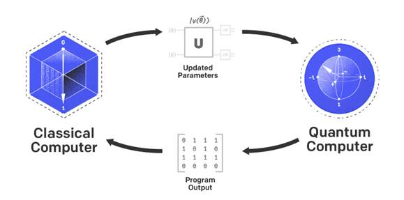

Quantum Computing for Computer Scientists

|
Instructor: Pierre
Boulanger
Prerequisites: Students should be comfortable with linear algebra concepts such as unitary and Hermitian matrices. They should also have basic knowledge of probability theory. Prior knowledge of quantum mechanics is helpful but not required.
Course Description: This course introduces the theory and applications of quantum information and quantum computation from the perspective of computer science. The course will cover classical information theory, compression of quantum information, quantum entanglement, efficient quantum algorithms, quantum error-correcting codes, fault-tolerant quantum computation, and quantum machine learning. The course will also cover physical implementations of quantum computation into real quantum computers and their programming languages using real-world examples utilising state-of-the-art quantum technology through the IBM Q Experience, Microsoft Quantum Development Kit, and D-Wave Leap.
Topics to be covered will likely include:
o Introduction, bracket notation, unitary operations, orthogonal measurements, n-qubit states, entanglement, single-qubit, and controlled operations o Super-dense coding, incomplete measurements, quantum teleportation o Quantum Computing Computer Architectures o Quantum Computing Languages o Quantum circuit model of computation o Quantum error-correcting codes and fault-tolerance o Basic quantum algorithms like Deutsch-Jozsa, Simon, and Grover o Shor factoring algorithm o Computational complexity theory o Quantum entanglement, teleportation, and Bell inequalities o Quantum Fourier transforms and the hidden subgroup problem o Quantum query complexity, span programs, and the adversary method o Density matrices, state discrimination, tomography o Von Neumann entropy and Huevo bound o Quantum machine learning
|
|
Lecture Date |
Topics |
Course Material |
Assignments and Announcements |
|
Module 1 |
o Introduction |
||
|
Module
2 |
o Origin of Quantum Mechanics and History of Quantum Computing |
This lecture is for your information |
o Open-source
software in quantum computing
|
|
Module 3 |
o Intro. To Complex Linear Algebra and Hilbert Space
o Dirac Notation and Schrodinger Equation
|
More on Dirac Notation and Hilbert Space Derivation-of-Shrodinger-Eqn.pdf |
Assignment 1a: Solve the following math problems Additional Information for
Assignment 1 Coding Assignments o
Assignment
1b Colab Notebook |
|
Module4 |
o Classical Bit and Quantum Bit Manipulations
o Circuit model of quantum computation-I
|
|
Assignment 2: Implement the following quantum circuits using Qiskit o Coding
Assignment 2 Colab Notebook o
Quantum
Shift Register Notebook |
|
Module 5 |
o Circuit model of quantum computation-II o More in Simon algorithm |
Simon Algorithm Implementation |
Assignment 3: Quantum Fourier Transform and Phase Detection Using Qiskit |
|
Module 6 |
o Phase Estimation and Shor Algorithm
o More on Shor quantum factoring algorithm o Grover search algorithm
|
|
Assignment
4: Implement Shor
Algorithm using Qiskit o
Coding
Assignment 4 Colab Notebook o Running a QC Program on IBM Q
o
Pennylane
Tutorial on Gover Algorithm
|
|
Module 7 |
o
Quantum Gate Neural
Networks
|
Training Optimization for Gate-Model Quantum Neural Networks |
Assignment
5: Implement Quantum Neural Network using
TensorFlow Quantum o
Coding
Assignment 5 Colab Notebook Project Description My suggestion for this year is that you choose from https://ieeexplore.ieee.org/st 1.
A title of the project 2.
A short description of its
objectives and theoretical foundation (max 3 pages in PDF formal) 3.
Two or three reference papers
that describes similar work 4.
The source of data you
will use to test the idea 5. A zip archive that includes the PDF files of the project description and the reference
papers |
|
Module 8 |
o Adiabatic Quantum Algorithm o Adiabatic Quantum Hardware o D-Wave Programming Environment |
|
Assignment
6: Discrete Optimization and Unsupervised Learning Using DWAVE o
Coding
Assignment 6 Colab Notebook
o
To do this assignment you need to get an account on
DWAVE virtual machine. Please use the DWAVE Leap website to get your ID
and the machine name to run your program. The code contains my ID and the
machine to use but only use it for a demo. Use your own! |
|
Module 9 |
o Quantum Machine Learning
o
Quantum Information Theory o DWAVE Quantum o Pennylane Certificate |
More on Quantum Machine Learning
Fast Track Your Quantum
Journey with Quantum Computing Training Expand your knowledge of quantum
computing and get started building quantum applications today. With the Quantum
Programming Core Course, you can accelerate quantum application development
and ramp up quickly with expert training and guidance. You will also connect
with the Leap community and D-Wave experts to gain new ideas and skills while
differentiating yourself in the marketplace. |
Quantum Approaches to Data Science and Data Analytics Examples of Quantum Machine
Learning o
Variational
Quantum Linear Solver o
Solving
Linear Systems of Equations Using HHL o
Quantum
Kernel Classification o
Kernel
Classification with Various Encodings o Training
with Hybrid Architecture o Quantum Generative Adversarial Networks
Assignment 7: Quantum Auto-Encoders o
Coding
Assignment 7 Colab Notebook Assignment 8: Training Deep Belief Networks Using Quantum Boltzmann Machine o Coding
Assignment 8 Colab Notebook |
|
Module 10 |
o Quantum Cryptography o Quantum Computer Hardware o
Quantum Computer Compiler o Fault-tolerant quantum error correction |
Quantum
Computer Hardware Overview |
Quantum Cryptography Explained |
Background Reading
Books
Other Lecture Notes
Quantum Computing Devices/Simulators
Papers/Talks